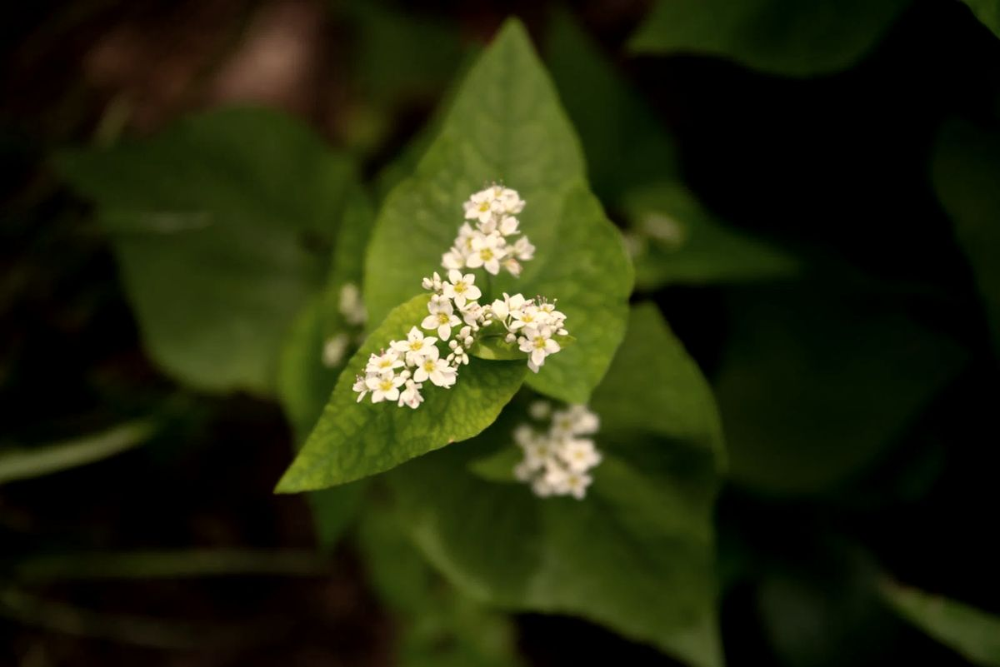

Вокруг нас много воды: родниковые озерца, реки, пруды. Пчёлам нужна вода, а ещё нектар и пыльца всего, что цветёт в нашем регионе Украины.
Вода нужна пчёлам не только для питья. Летом они носят её в улей, чтобы охладить гнездо: вода испаряется, а пчёлы крыльями проветривают улей. Весной воду используют, чтобы разводить корм для личинок. Пчеле легче, когда источник близко, поэтому рядом с пасекой так важно, чтобы было где напиться.
О каждом сорте читайте на странице «Сорта мёда», а последовательность цветения собрана в календаре «Медоносы». Отдельно про акациевый, разнотравье, подсолнечный, гречишный и липовый мёд.
Рабочая пчела вылетает обычно на два-три километра от улья, а при необходимости и дальше. Найдя богатое место, она возвращается и танцем показывает подругам, где оно и сколько там нектара. Чем разнообразнее растительность вокруг, тем стабильнее семья собирает нектар в течение всего сезона.
Разнообразие растений и чистая вода делают семью сильнее: пчёлам не приходится зависеть от одного цветущего поля. Напротив, выгоревшие луга, обработки во время цветения и сплошные поля одной культуры вредят. Подробнее о рисках в статье «Что угрожает пчёлам», а как помочь, в статье «Как помочь пчёлам».
Весной пчёлы живут ранними цветами, в начале лета акацией, потом разнотравьем и в августе подсолнечником. Зимой цветов нет, поэтому семья живёт на запасах мёда и перги, которые собрала летом. Именно поэтому щедрое и разнообразное лето нужно пчёлам не меньше, чем нам: подробнее в статье «Осень и зима».
Для пчёл важны не только травы. Рано весной нектар и пыльцу дают ива, лещина и клён, в мае цветут плодовые деревья, а в начале лета акация и липа. Деревья дают много нектара на небольшой площади, поэтому их ценят высоко. Некоторые из них цветут недолго, и для пчёл важно, чтобы разные виды сменяли друг друга.
Пчёлы опыляют растения, в частности рапс и подсолнечник: в некоторых случаях это повышает урожайность. Поэтому польза от пчёл не только в мёде, но и в опылении. Об этом подробнее в статье «Зачем миру пчёлы».
Цветение зависит от погоды: тёплая весна сдвигает его на недели, засуха уменьшает нектар. Поэтому на одном и том же месте мёд в разные годы получается разным. Об этом рассказывает статья «Почему мёд каждый год разный».
Вода, разные растения с цветением от весны до осени и отсутствие обработок во время цветения: вот из чего складывается хорошая природа для пчёл.
Как далеко летают пчёлы?
Обычно два-три километра от улья, но иногда дальше, если рядом мало цветов.
Зачем пчёлам вода?
Для охлаждения улья, разведения корма для личинок и питья.
Что цветёт первым?
Ива, лещина и одуванчик. О весне подробнее в статье «Весна».